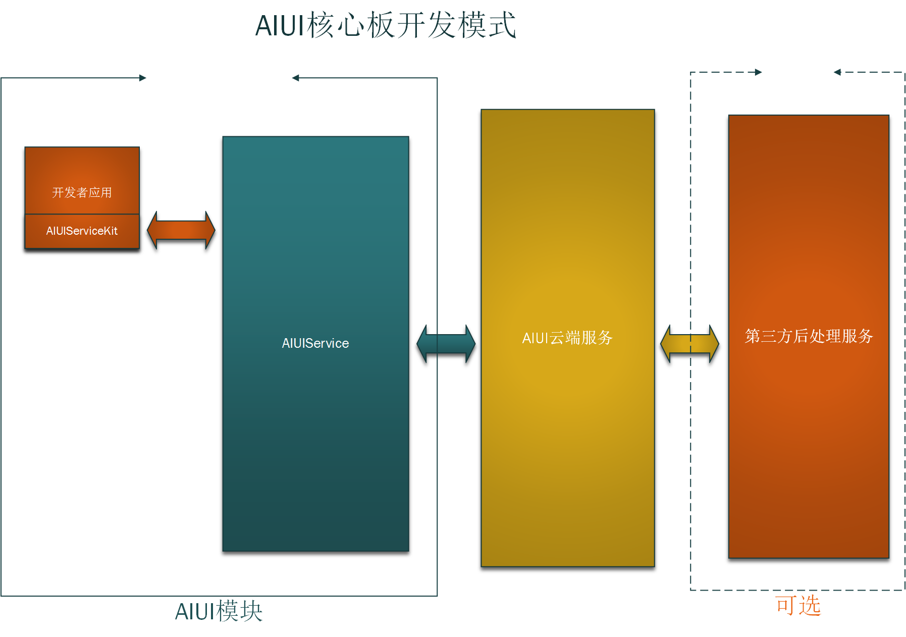

4.1 核心板模式¶
4.1.1 结构说明¶
适用：因为AIUI硬件上的预留限制，核心板模式适用无屏幕连接要求，无特殊硬件要求（蓝牙或者红外AIUI模块均不支持）
整体结构如下：
开发者APP集成AIUIServiceKit，运行在AIUI模块上，从AIUI Service获取结果，进行解析处理，与评估板上AIUIProductDemo的效果类似。
4.1.2 AIUIServiceKit SDK接口说明¶
- AIUIAgent
AIUIServiceKit中用于与AIUIService交互的接口类为
AIUIAgent。AIUIAgent提供如下接口://创建AIUIAgent实例 static void createAgent(Context context, AIUIListener listener) //发送AIUI消息 void sendMessage(AIUIMessage message) //销毁AIUIAgent实例 void destroy()
- AIUIListener
创建
AIUIAgent时传递的参数AIUIListener是用于接受AIUIService抛出事件的监听器。AIUIListener定义如下:interface AIUIListener { void onEvent(AIUIEvent event); }
- AIUIEvent
AIUIListener中监听的抛出事件的类型是AIUIEvent。AIUIEvent定义如下:class AIUIEvent { int eventType; //事件类型 int arg1; //参数1 int arg2; //参数2 String info; Bundle data; }
AIUI定义了多种
AIUIEvent，有不同eventType。当AIUIEvent取不同的eventType时， 其余字段有不同的定义，详细定义请见AIUIEvent的定义说明。
- AIUIMessage
AIUIAgent中
sendMessage方法用于向AIUIService发送AIUI消息。消息类型是AIUIMessage。AIUIMessage定义如下:class AIUIMessage { int msgType; //消息类型 int arg1; //参数1 默认空值 0 int arg2; //参数2 默认空值0 String params; //默认空值 "" byte[] data; //默认空值 null }
AIUI定义了多种
AIUIMessage，有不同的msgType。当AIUIMessage取不同的msgType时， 其他成员有不同的定义，详细定义解释请见AIUIMessage的定义说明。
4.1.3 理解¶
AIUI旨在封装交互一切复杂性，为开发者提供简单易用的接口。
AIUIServiceKit中提供的AIUIAgent就是和AIUIService交互的桥梁，通过发送不同的AIUIMessage控制AIUI的运行，
AIUI通过AIUIListener将不同的AIUIEvent抛出来给开发者程序解析。
4.1.4 调用流程¶
AIUIServiceKit的一般调用流程如下:
AIUIListener listener = new AIUIListener() {
@Override
public void onEvent(AIUIEvent event) {
switch (event.eventType) {
//唤醒事件
case AIUIConstant.EVENT_WAKEUP:
{
break;
}
//结果事件（包含听写，语义，离线语法结果，定义和解析格式参见4.6 AIUIEvent一节）
case AIUIConstant.EVENT_RESULT:
{
break;
}
//休眠事件
case AIUIConstant.EVENT_SLEEP:
{
break;
}
//错误事件
case AIUIConstant.EVENT_ERROR:
{
break;
}
}
}
AIUIAgent agent = AIUIAgent.createAgent(MainActivity.this, listener);
//只是为了演示sendMessage的调用逻辑，放在此处并没有什么意义
//agent.sendMessage(new AIUIMessage(AIUIConstant.CMD_RESET_WAKEUP, 0, 0, null, null);
具体的实现编码可以参考开发包中的AIUIDemo源码实现。
4.1.5 开发者程序自启动¶
Android 4.4之后的版本，默认新安装未启动的程序处于Stopped状态，无法接受系统广播BOOT_COMPLETE实现自启动， 所以AIUI添加对第三方应用自启动的支持。
第三方应用只需要创建Receiver，按照如下的配置接收AIUI的广播即可:
<receiver android:name=".BootReceiver">
<intent-filter>
<action android:name="com.iflytek.aiuilauncher.action.BOOT_START"/>
</intent-filter>
</receiver>